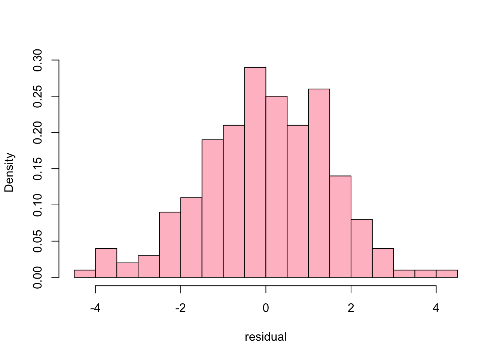
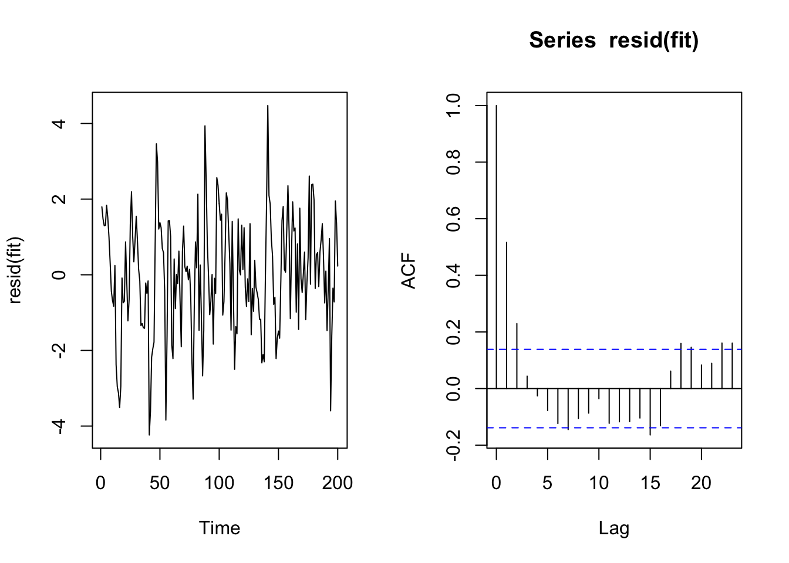
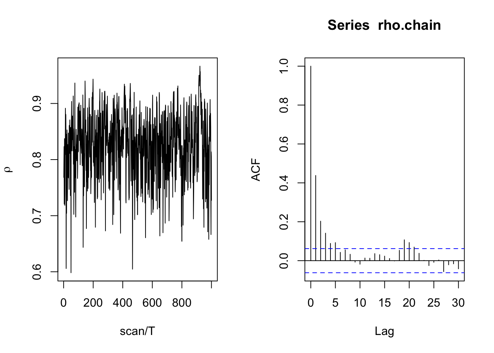
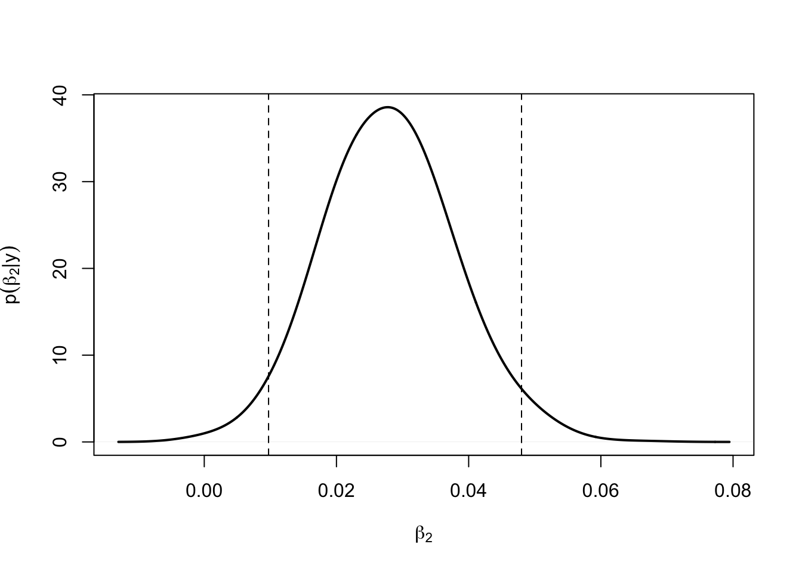

Lecture 18 Metropolis-Hastings
The following notes, mostly transcribed from Neath(0603,2021) lecture, summarize sections (10.4-10.5) of Hoff(2009).
The Metropolis algorithm and, for that matter, the Gibbs sampler as well are both special cases of a more general MCMC algorithm Metropolis-Hastings.
18.1 Why does the Metropolis-Hastings algorithm work?
Notation switch! we’re not doing \(\theta\) with \(p(\theta |\boldsymbol y)\) as the target distribution. Now we’re doing generic \(x\) as the variable and \(p_0(x)\) as the target density.
Current state of chain is \(x^{(s)}\)
Draw proposal \(x^{*}\) from \(J_{s}\left(x^{*} \mid x^{(s)}\right)\);
Compute the acceptance ratio \[ r=\frac{p_{0}\left(x^{*}\right)}{p_{0}\left(x^{(s)}\right)} \times \frac{J_{s}\left(x^{(s)} \mid x^{*}\right)}{J_{s}\left(x^{*} \mid x^{(s)}\right)} \]
Sample \(u \sim \operatorname{uniform}(0,1)\). If \(u<r\) set \(x^{(s+1)}=x^{*}\), else set \(x^{(s+1)}=x^{(s)}\).
The Hastings innovation that generalized the Metropolis algorithm is to not require that the jump proposal distribution be symmetric around \(\theta^{(s)}\). If it is then the second component of the acceptance ratio is 1.0. Because the jump proposal distribution need not be symmetric the acceptance ratio needs to be adjusted for not just the relative probability in the target distribution but the relative frequency of getting proposed. So \(\theta^*\) is a value that is getting proposed a lot then we want to reduce the probability of it getting accepted.
18.2 Combining the Metropolis and Gibbs algorithms
Sometimes you have a model with lots of variables for some of them the conditional distribution takes a nice form. Yay! We can do Gibbs updates for those components. But for other variables, perhaps not so nice. Can’t do Gibbs. So do Gibbs updates for the components where full conditional has a nice solution and for the components where the full conditional does not have a nice solution do a Metropolis update.
18.3 Example: Historical CO\(_2\) and temperature data
Data set on historic earth temperatures and CO\(_2\) levels over 100s of thousands of years. Two variables observed every 1000 years or so are temperature and CO\(_2\) concentration. These will be our \(y\)-variable and \(x\)-variable respectively.
Here’s a time series plot of the data
dim(icecore); names(icecore)## [1] 200 3## [1] "year" "co2" "tmp"Time between consecutive measurements is approximately 2,000 years.
plot(icecore[,1], (icecore[,3]-mean(icecore[,3]))/sd(icecore[,3]) ,
type="l", lwd=2, xlab="year", ylab="standardized measurement",
ylim=c(-1.75, 3))
lines(icecore[,1], (icecore[,2]-mean(icecore[,2]))/sd(icecore[,2]),
lwd=3, col="pink")
legend("topright", inset=.05, lwd=2, col=c("black","pink"),
legend=c("tmp", "co2") )Figure 18.1: Time series plot of temperature and carbon dioxide
-4e+05 means 400,000 years ago.
How do you put these two time series on the same axes? one for temperature (difference from current levels in degrees Celsius) and one for CO\(_2\) in parts per million volume. You have to standardize!
The agreement between these two time series is quite close. The model we’re going to fit is a linear regression model with temperature as the response and CO\(_2\) as the predictor.
Our model will say:
let \(x_t = co_2\) at time \(t\)
let \(y_t =\) temperature at time \(t\), \(t = 1, 2, …., 200\). Time is just acting as an index here since we have equally spaced measurements.
We’re gonna consider a regression model in which \(y_t = \beta_1 + \beta_2 x_t + \epsilon_t = \beta_1 + \beta_2 \texttt{co2}_t + \epsilon_t\). This is a regression model relating \(\texttt{temp}\) to \(\texttt{co2}\). This relationship is summarized by a scatterplot
# time is not reflected on this plot
plot(icecore[,2], icecore[,3],
xlab=expression(paste(CO[2], "(ppmv)")),
ylab="temperature difference (deg C)")
lines(lowess(icecore[,2], icecore[,3]), lwd=2)Figure 18.2: Scatterplot of temperature versus carbon dioxide
There seems to be a positive association. Linear regression seems reasonable for this problem.
Question is: The usual regression model assumes the error terms are independent. Is the assumption of independent error terms met for these data?
If \(\epsilon_t \stackrel{\text{iid}}{\sim}\) Normal\((0, \sigma^2)\) then our model has three parameters \(\beta_1, \beta_2, \sigma^2\).
These data are observed sequentially over time. We need to check for the possibility of temporal association in the error term
# Fit ordinary linear regression of tmp on co2
fit <- lm(tmp ~ co2, data=icecore); summary(fit)$coeff; summary(fit)$sigma## Estimate Std. Error t value Pr(>|t|)
## (Intercept) -23.02414 0.879543 -26.18 3.272e-66
## co2 0.07985 0.003834 20.83 8.767e-52## [1] 1.533\(\hat\beta_1 = -23\), \(\hat\beta_2 = 0.08\), \(\hat\sigma = 1.53\)
Normally distributed error terms is, strictly speaking, a fundamental assumption of the linear regression model but practically not the most important.
hist(resid(fit), freq=F, right=F, breaks=30,
main="", xlab="residual", col="pink")
Histogram of residuals looks like a bell curve or close enough. This is fine. What is a key assumption is that the error terms are independent. There isn’t a go to diagnostic for non-independence of error terms. Such a diagnostic only exists if there is some structure to the data such as spatial or temporal. In this case these data are observed over time so autocorrelation is meaningful!
par(mfrow=c(1,2))
ts.plot(resid(fit));acf(resid(fit))
In addition to \(y\) and \(x\) being time series, it appears that the error term has time series component also. There is positive temporal association.
acf(resid(fit), plot=F)[1]##
## Autocorrelations of series 'resid(fit)', by lag
##
## 1
## 0.517Lag-1 autocorrelation is 0.5. This is something we should not ignore. Sometimes you can have data that are observed sequentially over time but the relationship between \(y\) and \(x\) is such that the residuals are practically independent.
Here we have data observed over time but the relationship between \(y\) and \(x\) is such that the residuals are not independent (there is positive temporal association). So we gotta deal with this. This means our model can’t say \(\epsilon_t \stackrel{\text{iid}}\sim N(\boldsymbol{0}, \sigma^2).\) Normality is okay, mean \(\boldsymbol{0}\) is fine, constant variance is fine, the problem is the “iid” part (the error terms are not independent). There is no data transformation that’s gonna solve this problem. We need to accommodate it in the model itself.
18.5 Analysis of the ice core data
Priors:
\(\boldsymbol\beta_0 = \boldsymbol0\),
\(\Sigma_0 = 1000\times \mathbf{I}_2,\) diagonal with big numbers on the diagonal. In other words, a diffuse prior
\(\nu_0 = 1\) “prior sample size” of 1 versus data sample size of 200 (because diffuse prior)
starting values:
- start \(\boldsymbol\beta\) at the OLS estimate of \(\boldsymbol\beta\)
- start \(\sigma^2\) at the OLS estimate of \(\sigma^2\)
- start \(\rho\) at the sample lag-1 autocorrelation of the residuals from the OLS fit
# Gibbs sampler for 'Bayesian GLS' model fit
n <- dim(icecore)[1];
y <- icecore[,3];
X <- cbind(rep(1,n), icecore[,2]);
p <- 2;
rownames(X) <- 1:n
colnames(X) <- c("x1","x2")# Preliminary calculations
lmfit <- lm(y ~ 0 + X)
beta <- lmfit$coef
sigma2 <- summary(lmfit)$sigma^2
rho <- acf(resid(lmfit), plot=F)$acf[2] #tuning parameter
# and prior parameters
nu.0 <- 1;
sigma2.0 <- 1;
Sigma0.inv <- diag(2) / 1000
# Now run the MCMC!
D <- abs(outer(1:n, 1:n, "-"))
S <- 1000
ac <- 0;
delta <- 0.1
beta.chain <- matrix(NA, S, p)
sigma2.chain <- rep(NA, S)
rho.chain <- rep(NA, S);library(mvtnorm)
run.time <- proc.time()
for(s in 1:S)
{
# Update beta first
C.rho.inv <- solve( rho^D )
V.beta <- solve(t(X) %*% C.rho.inv %*% X / sigma2 + Sigma0.inv)
m.beta <- V.beta %*% (t(X) %*% C.rho.inv %*% y / sigma2)
beta <- rmvnorm(1, mean=m.beta, sigma=V.beta)[1,]
# Now update sigma2
SSR <- t(y - X %*% beta) %*% C.rho.inv %*% (y - X %*% beta)
sigma2 <- 1/rgamma(1, (nu.0+n)/2, (nu.0*sigma2.0 + SSR)/2)
# Now Metropolis update of rho
rho.star <- abs(runif(1, rho-delta, rho+delta))
rho.star <- min(rho.star, 2-rho.star)
log.r <- -0.5 * ( determinant( rho.star^D, log=T)$mod -
determinant( rho^D, log=T)$mod +
sum( diag( (y - X %*% beta) %*% t(y - X %*% beta) %*%
( solve(rho.star^D) - solve(rho^D) ) ) ) / sigma2 )
if(log(runif(1)) < log.r) { rho <- rho.star; ac <- ac + 1; }
# Save the updates!
beta.chain[s,] <- beta;
sigma2.chain[s] <- sigma2;
rho.chain[s] <- rho;
}
run.time <- proc.time() - run.timeac / S # acceptance rate## [1] 0.258Tuning parameter is \(\delta\). Remember our rule of thumb for tuning parameters and acceptance rates. A common strategy for tuning parameter is; Come up with a value for \(\delta\) some way some how. If the acceptance rate < 0.20 make \(\delta\) smaller if accept rate \(> 0.50\) make \(\delta\) bigger (\(\delta\) indicates the likely size of the proposed jump)
Our accept rate was 0.26 so that should be fine!
par(mfrow=c(1,2))
plot(rho.chain, type="l", xlab="scan", ylab=expression(rho))
acf(rho.chain)Figure 18.3: Trace plot and autocorrelation function for the rho chain
This is not good. 30 updates of this Markov chain are NOT 30 samples from the posterior. There’s just too much correlation.
library(mcmcse)
ess(rho.chain)## [1] 8.319In fact for 1000 iterations of the “Metropolised” Gibbs sampler the effective sample size was 8. Meaning our 1000 iterations was the statistical equivalence of 8 independent observations.
So here’s what we do. Don’t run 1000 iterations. Run 25,000 iterations. However, storing 25,000 sets of parameter values when consecutive values are practically the same (which they are here given this high autocorrelation) is not efficient. So what people do for chains with really high autocorrelation is to get a set of \(S\) samples, run the chain for \(S \times T\) iterations but only save every \(T^{\text{th}}\) update.
Let’s do \(S = 1000,~ T = 25\)
So we’ll run 25,000 updates(scans) of the Gibbs sampler but only save every 25th result. So we’ll get 1000 values. This is called “thinning” we thin our output from 25,000 values to just 1000. The lag-1 autocorrelation in the thinned chain will be the lag-25 autocorrelation in the unthinned chain. The lag 2 autocorrelation in the thinned chain chain will be the lag-50 autocorrelation from the unthinned chain.
run.time # run time in seconds## user system elapsed
## 36.979 1.803 38.800# projected run time in minutes
# This should take about 25 times the previous'
25 * run.time / 60 ## user system elapsed
## 15.4079 0.7512 16.1667Set it off, then go get a cup of coffee.
S <- 1000
T <- 25
beta.chain <- matrix(NA, S, p); ac <- 0;
sigma2.chain <- rep(NA, S); rho.chain <-rep(NA, S);
run.time <- proc.time()
for(s in 1:S)
{
for(t in 1:T){
###
# Update beta first
###
C.rho.inv <- solve( rho^D )
V.beta <- solve(t(X) %*% C.rho.inv %*% X / sigma2 + Sigma0.inv)
m.beta <- V.beta %*% (t(X) %*% C.rho.inv %*% y / sigma2)
beta <- rmvnorm(1, mean=m.beta, sigma=V.beta)[1,]
###
# Now update sigma2
###
SSR <- t(y - X %*% beta) %*% C.rho.inv %*% (y - X %*% beta)
sigma2 <- 1/rgamma(1, (nu.0+n)/2, (nu.0*sigma2.0 + SSR)/2)
###
# Now Metropolis update of rho
###
rho.star <- abs(runif(1, rho-delta, rho+delta))
rho.star <- min(rho.star, 2-rho.star)
log.r <- -0.5 * ( determinant( rho.star^D, log=T)$mod -
determinant( rho^D, log=T)$mod +
sum( diag( (y - X %*% beta) %*% t(y - X %*% beta) %*%
( solve(rho.star^D) - solve(rho^D) ) ) ) / sigma2 )
if(log(runif(1)) < log.r) { rho <- rho.star; ac <- ac + 1; }
###
} # Save the current value, but only after T scans
###
beta.chain[s,] <- beta;
sigma2.chain[s] <- sigma2;
rho.chain[s] <- rho;
}
(run.time <- proc.time() - run.time)## user system elapsed
## 923.45 45.02 969.38ac / (S*T) # acceptance rate ## [1] 0.2762# Let's look at trace plot and autocorrelation function for the rho chain
par(mfrow=c(1,2))
plot(rho.chain, type="l", xlab="scan/T", ylab=expression(rho))
acf(rho.chain)
Okay, that’s better
ess(rho.chain)## [1] 250.3So the thinning was effective. It’s not that the thinned chain contains more information than the unthinned chain. But it’s practically as good and saves storage.
We should have a good approximation to the posterior. Let’s start summarizing it. Let’s consider posterior inference about \(\beta_2.\)
plot(density(beta.chain[,2], adj=2), lwd=2, xlab=expression(beta[2]),
ylab=expression(p(beta[2]*"|"*y)), main="")
abline(v=quantile(beta.chain[,2], prob=c(.025, .975)), lty=2) 
Posterior density estimate Mostly above 0
round(quantile(beta.chain[,2], prob=c(.025,.25,.5,.75,.975)),3)## 2.5% 25% 50% 75% 97.5%
## 0.010 0.021 0.028 0.034 0.04895% posterior interval is [.01,.05] which is > 0, so the data give pretty compelling evidence that there exists a positive association between temperature and CO\(_2\) over the millenia.
round(c(mean(beta.chain[,1]),mean(beta.chain[,2])),3)## [1] -11.032 0.028Note:
When we fit the model by OLS we got \(\hat\beta_2 = 0.08\). Using this “Bayesian GLS” model we get \(\hat \beta_2 = 0.03\)
# fitting AR(1) to regression
library(orcutt)
round(summary(cochrane.orcutt(fit))$coef,3)## Estimate Std. Error t value Pr(>|t|)
## (Intercept) -10.814 1.669 -6.479 0
## co2 0.026 0.007 3.701 0Coefficients similar to Bayesian result
plot(y ~ X[,2], xlab=expression(CO[2]), ylab="temperature")
abline(apply(beta.chain, 2, mean), lwd=2)
abline(lmfit$coef, col="pink", lwd=2)
legend("topleft", inset=.05, lwd=2, col=c("pink","black"),
legend=c("OLS estimate", "Bayesian GLS"))Figure 18.4: Compare ‘Bayesian GLS’ estimate of regression line with the OLS estimate.
This shows the raw data, the OLS line in pink and the GLS line in black. The GLS line has positive slope but A LOT less steep than the OLS line.
Even though the pink line is the one that best fits these points by least squares criterion, given the correlation structure of the data the black line provides the more reliable estimate of the true association.
Any Ideas as to why? Hoff provides the explanation that for OLS estimation, the small number of data points with high \(y\)-values have a larger amount of influence on the estimate of \(\boldsymbol\beta\). In contrast, the GLS model recognizes that many of these extreme points are highly correlated with one another and down-weights their influence.
Student Question: If we directly used the 25000 unthinned values would we have gotten similar posterior conclusions?¿
Ans: Yes I believe so because \(\theta^{(1)}, \theta^{(2)},...,\theta^{(26)},\) \(\theta^{(2)}\) through \(\theta^{(25)}\) don’t contribute a whole lot. They’re just a whole bunch more values that are probably between \(\theta^{(1)}\) and \(\theta^{(26)}\)